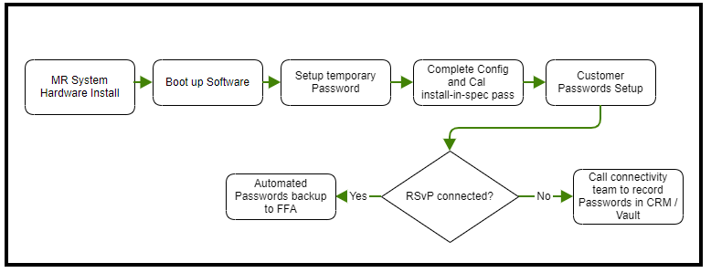

- 00000018WIA3086B950GYZ
- id_20260172.10
- Jan 19, 2023 4:14:39 PM
MR customer password management process for software 29.1 and later
Software version 29.1 or 25.4 introduces forced password changes on all user accounts to comply with minimum mandated security requirements for GE equipment. The customer will then have to create their own passwords. This document describes the process of how the customer and FE manage access to the system for clinical use as well as service and maintenance use.
